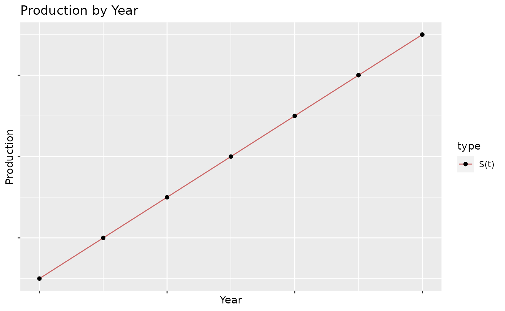
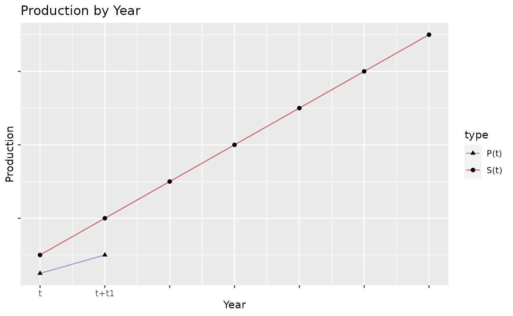
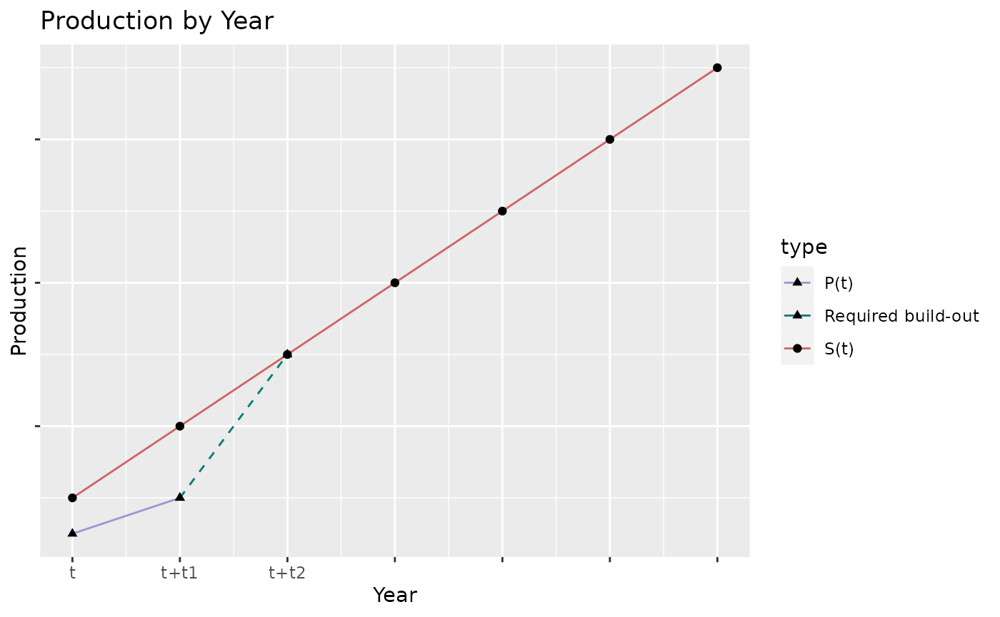
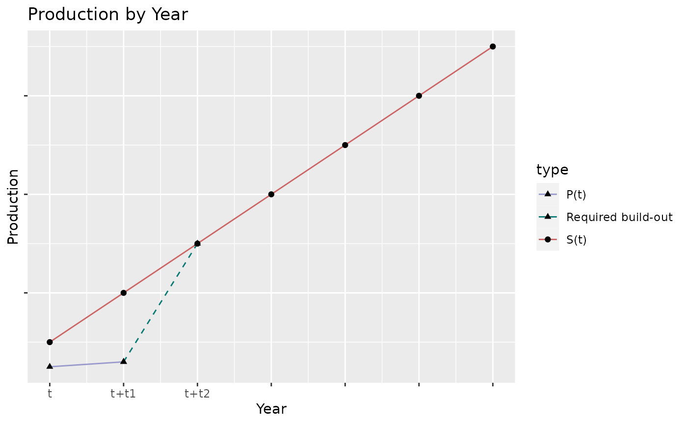
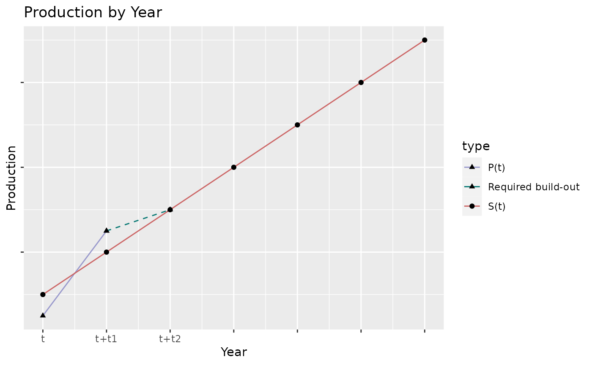
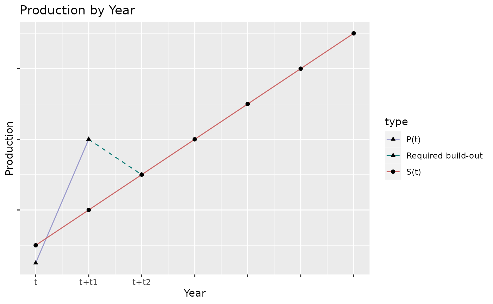
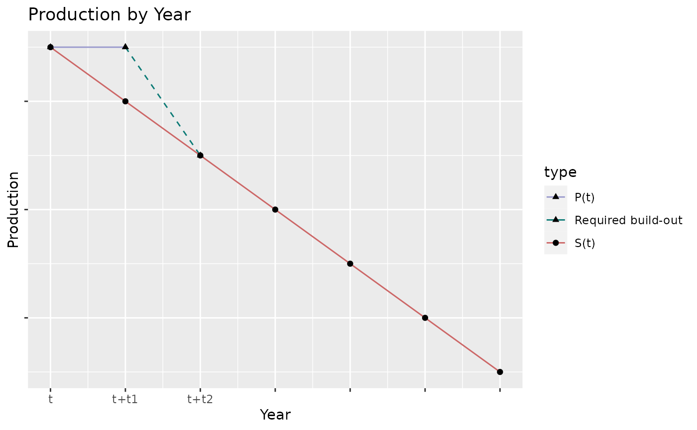
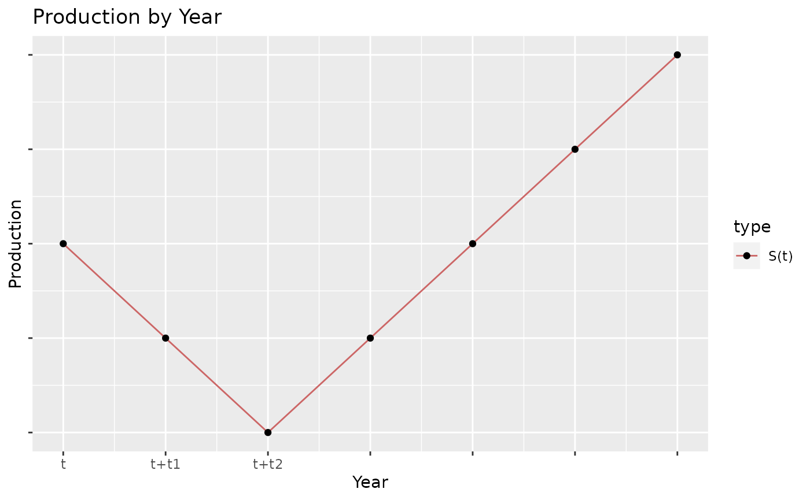
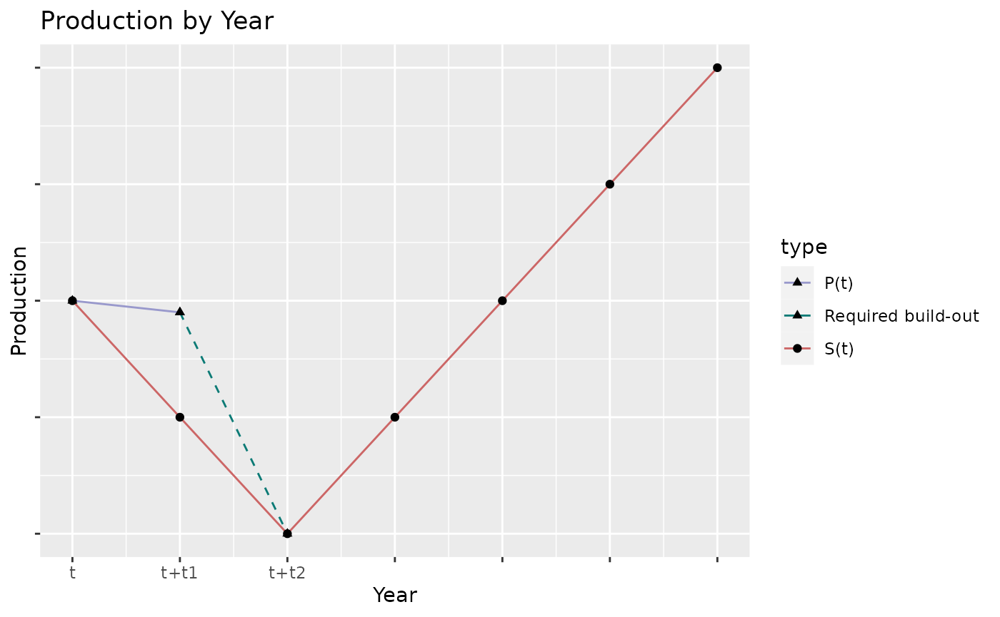

Transition Disruption Metric
Source:vignettes/articles/transition_disruption_metric.Rmd
transition_disruption_metric.RmdIntroduction
There are several metrics included in the PACTA analysis. Some metrics offer interesting insights on short time-scales (e.g. five years into the future). However, analysts may also be interested in longer-term insights (e.g. 10+ years into the future). To address this, we propose here the Transition Disruption Metric. In this article, we will motivate why such a metric is necessary, define the metric, provide a brief derivation, and explore interesting regions of the metric function, along with their interpretation.
Motivation
PACTA offers many metrics. One key component of most of these metrics if forward-looking data. This forward-looking data estimates the production of physical assets and is usually able to reliably forecast data to about five years into the future.
Another key component of these metrics is a climate scenario. These scenarios project how production should shift to mediate climate change. Most of these scenarios project that production should shift relatively smoothly from high-carbon to low-carbon technologies. There are, however, certain climate scenarios which shift very abruptly, often quite late in the scenario timeline (sometimes 20+ years into the future). These so-called “delayed response” scenarios, such as the Inevitable Policy Response (IPR) scenario, assume that future production of most sectors follow current trends (i.e. business as usual), before inevitably resulting in a massive and disruptive transition to low-carbon technologies in the long-term.
A possible use-case of these “delayed response” scenarios is to estimate the risks associated with a worst-case scenario materializing. In other words, we might want to measure how disruptive a climate transition could be to a company or portfolio. Now, since the interesting part of these delayed response scenarios is often positioned well beyond the five year time-horizon of our forward-looking data, most other PACTA metrics (e.g. Volume Trajectory) don’t provide useful insights into the later years of the scenario.
We propose the Transition Disruption Metric (TDM) as a way to address this problem. This metric aims to provide useful insights in the medium- to long- term (i.e. time-horizons greater than five years).
Metric Definition
First, let us define the metric with no context. We will then derive it together in the following section. The Transition Disruption Metric, \(TDM\), for some technology, \(i\) is:
\[TDM_i = max\left(0, \frac{S_i (t+t_2) - P_i(t+t_1)}{S_i(t+t_2) - S_i(t)} * \left(\frac{t_2}{t_2-t_1}\right)\right) \]
where: - \(i\) is some technology
\(t\) is some year -
\(S_i(t)\) is a climate scenario, forecasting production for some technology \(i\), at year \(t\)
\(P_i(t)\) is the production associated to a company or portfolio, for some technology \(i\), at year \(t\)
\(t_1\) and \(t_2\) are two future years, where \(t_1 < t_2\)
Derivation
Let’s derive this metric together. Consider first some arbitrary function, \(S(t)\), that in general may increase or decrease over time. This function could represent, for example, a climate scenario dictating how production must change to mitigate climate change:

Now, let’s say we know the production associated with a company or portfolio, \(P(t)\), for the range \((t,t + t_1)\). In general, \(t + t_1\) will be less than the end year of the scenario:

We are comparing the estimated future production of a portfolio against what the scenario is suggesting. We can thus define a “transition”, simply as adjusting the portfolio’s production to match that of the scenario.
If we want to determine how disrupted a portfolio might be between the last date we have data for it, \(t+t_1\), and some future date in the scenario, \(t+t_2\), we may simply draw a line connecting the two points:

Suppose now we wish to compare the slope of the scenario, \(m_S\) and the slope of the required future build-out of the portfolio, \(m_P\) (that is, the slope of the dashed line in the above plot).
The slope of the scenario, between \((t, t+t2)\) is:
\[ m_S = \frac{S(t+t_2) - S(t)}{(t+t_2) - (t)} \]
To calculate the slope of the portfolio’s required build-out, recall that we have constructed this line to connect \(P(t+t_1)\) and \(S(t+t_2)\). Thus we can see that the slope will be:
\[ m_P = \frac{S(t+t_2) - P(t+t_1)}{(t+t_2) - (t+t_1)}\]
Taking the ratio of these two slopes, and tidying up a bit, yields:
\[\frac{m_P}{m_S} = \frac{S_i (t+t_2) - P_i(t+t_1)}{S_i(t+t_2) - S_i(t)} * \left(\frac{t_2}{t_2-t_1}\right)\] This looks similar to the metric we defined at the beginning, but we aren’t quite done yet. Let’s analyze some interesting regions of this function, and try to understand what is missing.
Interesting regions
Increasing Scenarios
For now, let’s assume that \(m_S\) is strictly positive, thus the scenario is increasing. We will explore the opposite case later.
- Case 1: \(\frac{m_P}{m_S} > 1\): The portfolio will need to change it’s production at a rate more rapid than the scenario to achieve the same production value at \(t+t_2\).

- Case 2: \(\frac{m_P}{m_S} = 1\): The portfolio and scenario have the exact same value at \(t+t_1\), and thus the portfolio will need to increase it’s production at exactly the same rate as the scenario (this is difficult to see on the graph, since “Required build-out” is on the same line as S(t)):
- Case 3: \(0 < \frac{m_P}{m_S} < 1\): The portfolio is producing more than the scenario at \(t+t_1\), but still less than is required at \(t+t_2\). The slope of required build-out will be positive, but less than the slope of the scenario.

- Case 4: \(\frac{m_P}{m_S} < 0\): The portfolio is producing more than the scenario at \(t+t_2\) thus it is already more ambitious than the scenario. To align with the scenario it would need to reduce it’s production:

In this final case, we don’t necessarily need a metric as we don’t expect the portfolio to be disrupted if it is already out-performing against the scenario, so we can attenuate negative values:
\[max\left(0, \frac{m_P}{m_S}\right)\]
or
\[max\left(0, \frac{S_i (t+t_2) - P_i(t+t_1)}{S_i(t+t_2) - S_i(t)} * \left(\frac{t_2}{t_2-t_1}\right)\right)\] This is exactly the metric we defined at the start.
Decreasing Scenarios
To be complete, let’s consider decreasing scenarios (i.e scenarios where \(m_S < 0\)). For such a scenario, the above cases still hold their validity, just with the sign of \(m_P\) reversed. That is to say:
- Case 1: The case that the portfolio needs to change more rapidly than the scenario to meet at \(t + t_2\) can still be shown as \(\frac{m_P}{m_S} > 1\). This is because, if \(m_S < 0\), then \(m_P\) will simply need to be more negative, and the signs will cancel out.

It is left as an exercise to the reader to prove that, due to similar sign cancellations, Cases 2, 3 and 4 keep their interpretation, regardless of if the scenario increases or decreases.
Non-Monotonic Scenario
There is one final situation we have not yet accounted for, and this is the case of the non-monotonic scenario. Consider the situation that \(S(t)\) increases (or decreases) over the period \((t, t+t_2)\), but then decreases (or increases) over the following time-period:

Here, our usual formulation might look something like this: 
However this doesn’t really make sense. Since overall the scenario is increasing, if the portfolio or company is producing more than the scenario projects it shouldn’t be disrupted at all.
Normally, this would be accounted for by our \(max(0, \frac{m_P}{m_S})\) function, however the function is now off by a factor of \(-1\), since the scenario is changing directions.
To account for this, we add a special considerations to the \(TDM\) metric:
IF \(S(t+t_2) > S(t) > S(t+t_1)\) OR \(S(t+t_2) < S(t) < S(t+t_1)\), then:
\[TDM = max(0, - \frac{m_P}{m_S})\]
ELSE:
\[TDM = max(0, \frac{m_P}{m_S})\]
Conclusion
We have derived together here the Transition Disruption Metric, which is useful for determining how a portfolio or company might be disrupted due to a delayed transition. We explored how different values of the metric can be interpreted, and how different edge-cases are handled.
TDM in Practice
One final note: in practice, PACTA’s forward-looking data goes 5 years into the future, so we can set \(t_1 = 5\). By default, we will measure the transition disruption against a total time horizon of 10 years, so \(t_2 = 10\). In this case, this metric reduces to:
\[TDM_i = 2 * max\left(0, \frac{S_i (t+10) - P_i(t+5)}{S_i(t+10) - S_i(t)}\right)\]